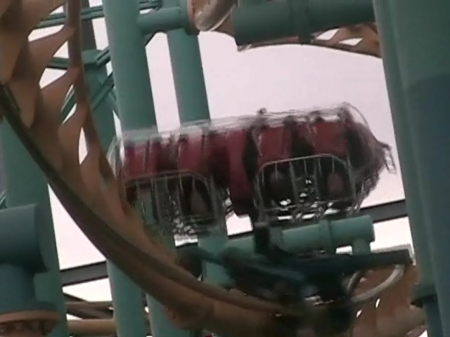
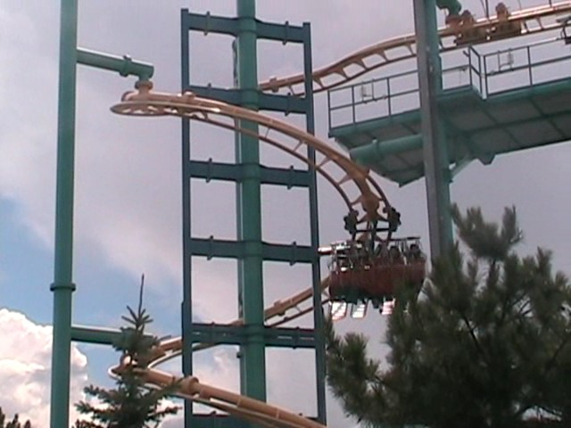

| |
Time Warp Review

We're here at Canada's Wonderland. Today's ride we'll be reviewing for you is Time Warp. After waiting in a long line, you then walk up and see the way you load. It's a very bizzare way to load. The cars are tilted and you simply climb in the cars and sort of stand up, only at a 45 degree angle. Then the ride operator pulls down the cage, locking you in. It feels very awkward to be in this position. Because as you can tell, it sort of feels like a prison when you are like this. After doing that, you then tilt into flying position. Then you go into the spiral lifthill. I have got to say that the spiral lifthill is one of the coolest lifthills on a rollercoaster. It just has a trippy and awkward feeling to it. But at the same time, it sort of has a feeling of impending doom to it. This particuarly applied to me as I thought that this ride was going to beat the living crap out of me since Top Gun turned out to be a HORRIBLE SLC and Wild Beast practically raped me, I thought I would get no mercy here. Then, we reach the top. We go through an S Curve, we then get a good view of Top Gun. But we're just thinking of the impending doom that we're about to go through. Down the first drop, it feels like we're going dangerously fast because right after this, we're about to go through one of those ridicously tight turns we have seen in the line. We embrace to be donkey kicked in our skulls, but suprisingly, we don't even hit the sides. This is a nice plus. Perhaps this may be fun after all. But right after that, we go straight through an inline twist. And all I can say is this. Inline Twists on Volares are amazing. You get some crazy hang time as you suprisingly have enough room in your hamster cage to sort of float upsidedown and get some hangtime (Oh, and to those who don't consider inline twists on flying coasters to be inversions, I don't know what crack you are smoking, but I just have two things to say. #1: Stop smoking crack. It's not cool and it'll kill you. #2: Go ride a Volare and then you'll realize "Oh wait, I'm upsidedown"). You then go through another tight turn before hitting a mid course brakes. Now the second turn has a little headbanging to it, but nothing that the hangtime in the inline twists doesn't make up for. We then drop again before going through another tight turn before going into another inline twist. YAY!!! More Hangtime!!! And we're upsidedown!!! =) We then go through a tight turn before going through another set of mid course brakes. So basically, we did everything that we did before the mid course brakes. After these next Mid Course brakes, we then go down another small drop before going through another tight turn. So basically, the last third of the ride is just like the first two thirds without the inline twists, only replaced with twisty bits. Then you get into the brakes. I wouldn't really recommend it as while it's fun, it's not exactly butter smooth on those turns, and the whole ride is really repetitive. I mean, the first two halfs are exact clones of each other. But I'd still recommend it to anyone who hasn't ridden a Volare, those who still smoke crack and don't count inline twists on flying coasters as inversions, credit whores, and just anyone who enjoys good hangtime.
6/10
Location: Canada's Wonderland
Opened: 2004
Built by: Zamperla
Last Ridden: August 7, 2008
I have ridden this exact same ride at the following parks.
Coney Island
Särkänniemi
Time Warp Photos


Home
|